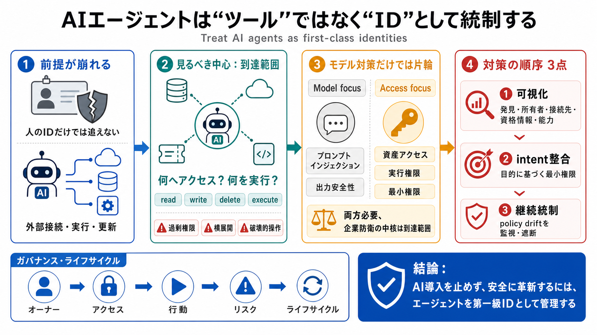

65 Percent of Enterprises Have Already Experienced AI Agent Security Incidents | Token Security
# 65 Percent of Enterprises Have Already Experienced AI Agent Security Incidents. And, while organizations are racing to…

AIエージェント（外部システムへ接続・実行する存在）を、企業のセキュリティで“ツール”ではなく“アイデンティティ（ID）”として扱うべきだ、という警告です。
従来は「人のID（身元）を管理すれば守れる」を前提にしてきましたが、エージェントが外部へ接続し“実行・更新”できると、従来監査だけでは実態が追えません。
AIエージェントは、生産性用途から始まっても、業務システムに繋がった瞬間に“特権を持つ内側の主体（privileged insider）”の性格へ変わります。
脅威（プロンプトインジェクション等）も重要ですが、企業が制御すべき中核は「そのエージェントが具体的に何へアクセスでき、何を実行できるか（blast radius）」です。
過剰なサービスアカウント、意図しない統合、侵害されたセッション、悪質プラグイン、設定ミスが重なると、データ流出だけでなく破壊的操作や横展開（lateral movement）にも繋がり得ます。
両方が必要ですが、記事は到達範囲の統制が企業防衛の中核になる、と強調しています。
エージェントは“名前が分かっても中身が見えない”ギャップが起きます。必要なのは、実際に使う資格情報と、各アプリでの読み書き削除・実行能力まで含む一覧です。
営業準備はCRMの読取りだけで足りるのに削除権限を持つ、財務は請求書閲覧だけのはずなのに特権ユーザー作成までできる──こうした“役割と能力の不一致”が根になる、と述べています。
最小権限の設計は“初期設定”で終わりません。更新・指示変更・統合追加で、時間経過とともにスコープが意図せず拡大する（policy drift）ため、継続監視が必要です。
“時点チェック”ではなく、変更や統合拡大の前提でリスクを制御します（日本語/英語：継続的ガバナンス / continuous governance）。
ベンダーストーリーに寄せず、ログの取り方・既存IAMとの統合・運用負荷の現実で判断します。加えて、KPI（発見率、権限逸脱率、監視カバレッジ）を置くと議論が前進します。
AI導入を止めるのではなく、エージェントを第一級のIDとして扱い、オーナー・アクセス・行動・リスク・ライフサイクルを確立する企業が、安全に革新を両立できる──これがメッセージです。
# 65 Percent of Enterprises Have Already Experienced AI Agent Security Incidents. And, while organizations are racing to…
[Trusted AI & Cloud Consultant](https://cloudsecurityalliance.org/trusted-ai-and-cloud-consultant). [STAR for AI](https:…
AI Agent Identity Crisis: Standards Emerge as Enterprises Lag Okta's Agentic Identity Framework and the Non-Human Identi…
# Autonomous, But Not Controlled: The Illusion of AI Agent Governance. In many organizations, they are already embedded …
[Menu](https://www.gravitee.io/state-of-ai-agent-security#menu). * [Platform](https://www.gravitee.io/state-of-ai-agen…